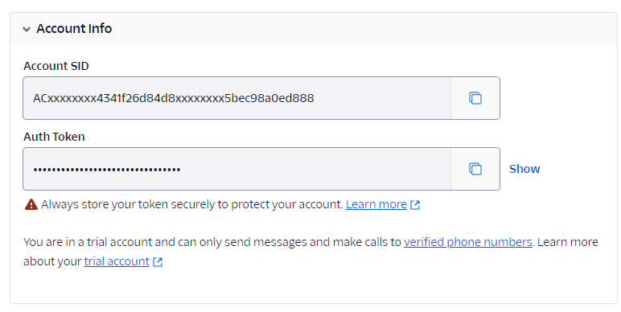
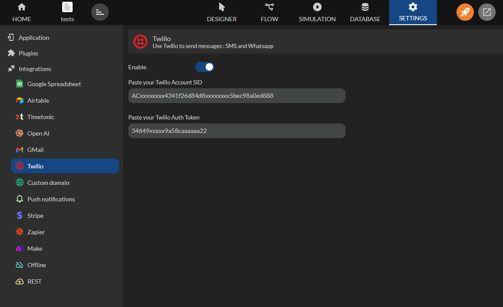
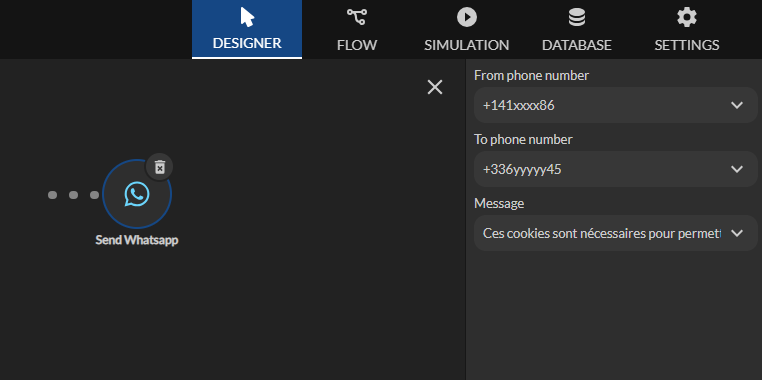
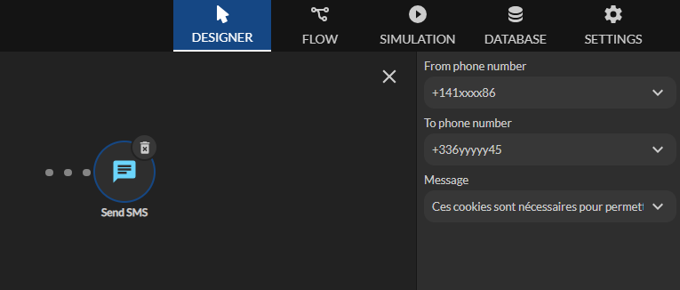

Twilio
Disponible depuis le plan Professional
L'intégration Twilio vous permet d'envoyer des messages WhatsApp et des SMS facilement. En entrant simplement vos informations de compte Twilio, vous pouvez communiquer avec vos utilisateurs.
Configuration de Twilio
Prérequis
Avant de commencer, assurez vous d'avoir un compte Twilio actif avec des crédits disponibles. Si ce n'est pas encore fait, inscrivez-vous sur le site de Twilio et ajoutez des crédits à votre compte.
Génération des clés d'API
Pour configurer Twilio, vous aurez besoin de votre Account SID et de votre Auth Token. Vous pouvez les obtenir en suivant ces étapes :
- Connectez-vous à votre compte Twilio via https://console.twilio.com/
- Accédez à la section Account Info sur votre tableau de bord.
- Notez votre Account SID et votre Auth Token.

Configuration Zyllio
- Ouvrez votre application depuis le Studio Zyllio
- Accédez à l'onglet Settings (Paramètres)
- Sélectionnez la section Twilio
- Activer l’intégration en cliquant sur l’option Enable
- Copiez / Collez votre Account SID et votre Auth Token dans les champs correspondants

Utilisation des actions de messagerie
Envoi de messages WhatsApp
- Allez dans l’éditeur d’actions depuis un bouton défini dans un écran.
- Sélectionnez l'action Send WhatsApp
- Entrez le numéro de téléphone de l’expéditeur (from phone number)
- Entrez le numéro de téléphone du destinataire (to phone number) au format international, par exemple, +1234567890)
- Indiquez le message que vous souhaitez envoyer (message)

Envoi de SMS
- Allez dans l’éditeur d’actions depuis un bouton défini dans un écran.
- Sélectionnez l'action Send SMS
- Entrez le numéro de téléphone de l’expéditeur (from phone number)
- Entrez le numéro de téléphone du destinataire (to phone number) au format international, par exemple, +1234567890)
- Indiquez le message que vous souhaitez envoyer (message)

Notes importantes
Les actions Send Whatsapp et Send SMS soumettent la demande d’envoi auprès de Twilio. L’action Zyllio est un succès si cette demande est bien transmise mais ne signifie pas que le message est bien envoyé par Twilio En cas de doute, vérifiez leurs statuts dans l’interface Monitoring de Twilio Notez que certains messages peuvent être refusés par les plateformes. Par exemple: https://www.twilio.com/docs/api/errors/63040